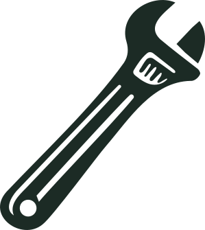
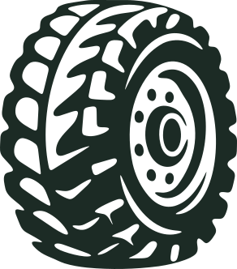
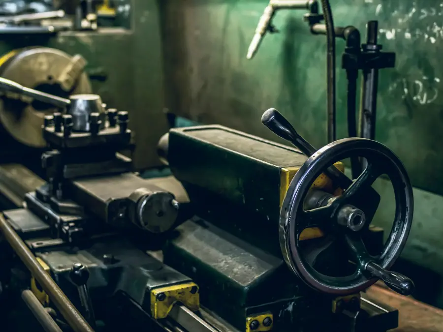

Repuestos para tractores y maquinaria pesada
Originales y alternativos de dieciocho marcas. Y lo que no se consigue, lo fabricamos en nuestra tornería. En Laguna Blanca, Formosa, desde 2001.
O elegí la marca de tu máquina

Catálogo de repuestos
Catálogo de muestra: los productos y precios son ejemplos hasta cargar la lista real.
No está en la página, pero puede estar en el mostrador
En el local tenemos mucho más de lo que entra acá. Escribinos qué buscás y te decimos si lo tenemos, si lo conseguimos o si lo fabricamos.
Preguntar por WhatsAppSomos distribuidores oficiales de lubricantes Shell.
Ver lubricantesTaller y servicios
Los trabajos de taller se programan con anticipación. Pedinos turno y te decimos cuándo entra tu máquina.
-

Mecánica pesada
Taller especializado en tractores y maquinaria pesada, con los repuestos originales y alternativos en el mismo lugar.
-

Asistencia a campo
Vamos hasta tu máquina en toda la provincia de Formosa y en zonas cercanas del Paraguay. El viaje se cobra por kilómetro y lo presupuestamos antes de salir.
-
Tornería
Fabricación y reparación de piezas, maquinado de precisión y roscas en todos los pasos. Hierro, grilón, poliamida y bronce.
-
Soluciones hidráulicas
Reparación y fabricación de cilindros, mangueras a medida, bombas, conexiones, sellos y empaquetaduras.
-
Lubricentro
Cambio de aceite y filtros con lubricantes Shell para motor, transmisión e hidráulico.
-

Herrería, chapa y pintura
Soldaduras de todo tipo, protecciones frontales y laterales para tractores, y trabajos de chapa y pintura.

Lo que no se consigue, lo fabricamos
Cuando el repuesto no existe o tarda semanas en llegar, lo hacemos en nuestra tornería a partir de la pieza rota, un plano o una medida.
Consultar por una pieza a medida- Cuchillas para desmalezadoras
- Pernos y bujes
- Cilindros hidráulicos
- Desmalezadoras
- Acoplados
- Tanques de agua y de combustible
- Piezas a medida en hierro, teflón y grilón
Nadie se va sin una solución
Es lo que más nos agradecen desde 2001: que buscamos la vuelta hasta resolver el problema, con buen precio y en el tiempo que prometimos. La garantía de cada trabajo y de cada repuesto te la informamos junto con el presupuesto.
Trabajamos con
- Productores agropecuarios de toda la provincia
- Casi todos los municipios de Formosa
- Dirección de Vialidad Provincial
- SPAP
- Universidad Provincial de Laguna Blanca
- Escuela Agrotécnica
Dónde estamos
Ruta Nacional N.º 86, km 1346,5
Laguna Blanca, Formosa
Horarios
| Lunes a viernes | 7:30 a 12 y 14:30 a 19 |
|---|---|
| Sábados | 7:30 a 12 |
| Domingos | Cerrado |
Fuera de horario atendemos solo urgencias de entrega de repuestos.
Contacto
- WhatsApp 3718 417471
- Llamar al 3718 417471
- serviciosagrop.osuna@gmail.com
- Instagram @agrosunaserviciosagropecuarios
Te responden Juan Manuel, Federico o Griselda.